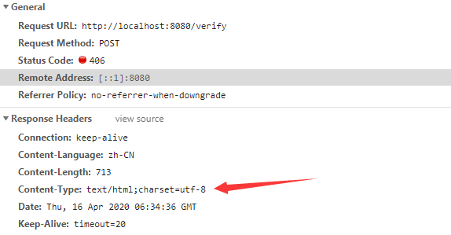

Http状态码406
状态码406：HTTP协议状态码的一种，表示无法使用请求的内容特性来响应请求的网页。说白了就是后台的返回结果前台无法解析就报406错误。
碰壁原因
学习JavaWeb以来第一次碰到406的错误。
事情来由呢，就是我在练习github上的ssm开源项目时遇到的。在最开始的时候配置maven依赖的时候，我并没有参考原作者的依赖，而是直接按照自己的方式配的maven依赖。一来是因为，这个项目是几年前的，所用的包也不是最新版本的。二来嘛，就是怕遇到不同版本的冲突，毕竟在前段时间我用了高版本的mysql驱动遇到了许多问题。所以最开始，我就配了JavaWeb、ssm框架和测试所用的依赖。然后今天就遇到了一个406的问题，很是兴奋，就记录一下。
实现功能：学生填写学号和密码，程序去数据库中查找有无此学生。
ajax:1
2
3
4
5
6
7
8
9
10
11
12
13
14
15
16
17
18
19
20
21
22
23
24
25
26verifyWithDatabase:function(studentId,password){
var result=false;
var params={};
params.studentId=studentId;
params.password=password;
var verifyUrl=bookappointment.URL.verify();
$.ajax({
type:'post',
url:verifyUrl,
data:params,
datatype:'josn',
async:false,
//同步调用，保证先执行result=true,后再执行return result;
success:function(data){
if(data.result=='SUCCESS'){
window.location.reload();
//弹出登录成功！
alert("登陆成功！");
result=true;
}else{
result=false;
}
}
});
return result;
}
controller.java1
2
3
4
5
6
7
8
9
10
11
12
13
14
15(value="/verify", method = RequestMethod.POST, produces = {
"application/json; charset=utf-8" })
private Map validate(Long studentId, Long password){
Map resultMap=new HashMap();
Student student =null;
student =bookServiceImpl.validateStu(studentId,password);
if(student!=null){
resultMap.put("result", "SUCCESS");
return resultMap;
}else{
resultMap.put("result", "FAILED");
return resultMap;
}
}
一开始我以为是程序的问题，然后我就在private Map validate方法前设了断点，进行了调试。但时程序没有问题，程序会进入tudent!=null条件里，这是符合我的思路的。然后我就想也许是返回数据时出现问题。

虽然知道了大概问题所在之处，但是我还是不知道怎么解决。此时，我脑子就闪过一个词“面向百度编程”。
解决方法
添加依赖的包：1
2
3
4
5<dependency>
<groupId>com.fasterxml.jackson.core</groupId>
<artifactId>jackson-databind</artifactId>
<version>2.10.2</version>
</dependency>
spring-mvc配置文件修改：1
2
3
4
5
6
7
8
9
10
11
12
13
14
15<!--json乱码问题配置-->
<mvc:annotation-driven>
<mvc:message-converters register-defaults="true">
<bean class="org.springframework.http.converter.StringHttpMessageConverter">
<constructor-arg value="utf-8"/>
</bean>
<bean class="org.springframework.http.converter.json.MappingJackson2HttpMessageConverter">
<property name="objectMapper">
<bean class="org.springframework.http.converter.json.Jackson2ObjectMapperFactoryBean">
<property name="failOnEmptyBeans" value="false"/>
</bean>
</property>
</bean>
</mvc:message-converters>
</mvc:annotation-driven>
This is copyright.